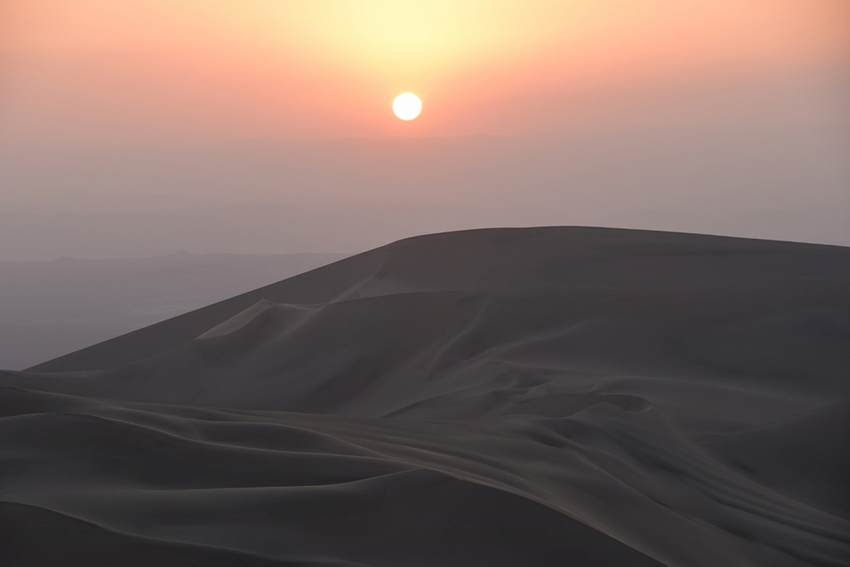

飽國中及高中時期熱愛歷史的我，對中國月牙泉有著無限的嚮往。而對沙漠的喜愛更直到拜讀三毛的作品 - 「撒哈拉沙漠」後，讓我深深覺得今生一定得走上沙漠一回。始末料及，月牙泉還沒見過，非洲也沒踏上，但我卻在南美祕魯的Huacachina完成了我的心願。而在行前，完全沒看行程表也沒事先研究觀光景點的我，任由同行的夥伴帶領我，真感謝夥伴完成我的人生清單的一項心願，也感謝當年的自己勇敢的踏出舒適圈，就這樣四個女子半自助的完成祕魯之行。
Huacachina位在祕魯首都Lima南方285公里的Ica city只有5公里的地方。在此綠洲中的美麗潔淨的潟湖由棕櫚樹所環繞，有些像非洲的撒哈拉沙漠中所見的那些潟湖。Huacachina被譽為南美洲最美的綠洲，湖水有如寶石般鑲在沙漠中央，景色令人歎為觀止；湖畔周圍棕櫚樹林立，碧綠的湖水四周被沙丘所環繞著。這個綠洲湖泊有一則神話，據說一位公主脫衣洗浴，正在對鏡打扮之時，看到一位獵人在偷看，慌忙之際公主失手跌碎了鏡子，而鏡子的碎片則化作這片湖泊。這裡除了可以在湖中划船，也可在沙漠中體驗滑沙的樂趣。這個綠洲曾經是Lima富豪們流行的度假美容水療中心，這裡的泉水被認為具有治癒的療效，許多人來到水中沐浴，可放鬆及治療他們的身體和皮膚。然而現在新發展出的沙漠越野車及沙丘滑板的活動，已吸引了眾多的國內外旅客前來此地參加在這些古老的沙漠中進行探險活動，現已是祕魯最受歡迎的旅遊目的地之一。
| Huacachina中心之綠洲。 |
我的Huacachina之旅在當天一早，真的是一早的凌晨，我們從Lima搭上巴士朝Ica前進，接著再從Ica換計程車到達Huacachina。在等待沙漠進行的活動前，我們在當地餐廳用了午餐，飯後就悠閒地繞著湖周圍散步；微風徐徐，湖四周都是高聳的沙丘圍繞著，湖水映著綠樹及沙丘，真的是很別緻的一幅畫。
接著，我們坐上了可以在沙漠行駛的越野車，往高聳的沙丘前行。不得不說沙漠越野真的很刺激，我們不斷的往沙丘下俯衝，從小角度的沙丘慢慢進階至近直角的高度，引得車上的我們尖叫連連。第二項活動換成滑板，一樣從小角度的沙丘慢慢至大角度的沙丘往下滑，真的是讓從未玩過滑板的我，感覺新奇又刺激，但看官們，若之後有機會來滑沙，切記眼鏡、口罩得戴上，當滑下沙丘時，迎面的沙塵根本無法睜眼及呼吸啊。
| 越野沙漠的車。 |
 |
| 滑沙。 |
| 沙丘中渺小的人們。 |
| 撒上陽光的沙丘。 |
經過了一連串刺激的活動，時間逼近黃昏，我們看到慢慢沒入沙丘的太陽，沙丘的黃昏美的讓人屏息。
|  |
| 沙丘上的夕陽。 |
| 點燈的綠洲。 |
回程俯瞰綠洲，星星燈火亮起，周遭圍著沙丘，這一幕真真切切讓我感受的世外桃源一詞。乍到此處，從計程車下車之時，當時還覺得這個地方除了中心的湖水其他就是無盡的沙，感覺只是個悠閒寧靜之處；著實沒想到這邊有著靜態的美更有讓人可以回味無窮的動態沙上活動，適合宜靜宜動、不同需求的旅客來這邊一遊。
我們回到了休息處，等待計程車出發要到巴士站前，我們的旅遊套裝竟還附上每人一杯雞尾酒，冰冰涼涼的飲料不僅讓我喝光了我的，還把不喝酒同伴的一杯也乾了，所以最後我是醉昏了，昏沉沉的被夥伴扶著離開了Huacachina；最後一路在巴士上昏睡到下一站要觀看Nazca Line的飯店，果真不能貪杯，總感覺沒對Huacachina好好的道別，好好的再看一眼。
經過了刺激的一天，當天的清潔更是重點，全身上下都是沙，耳朵、鼻孔、頭髮，花了很久的時間洗刷，這也是一種難忘的回憶啊。
八年過後的今天，意外看到最近YouTube頻道，頻道主在Huacachina這邊介紹沙上的活動及在當地帳棚過夜，這沉在記憶中深處湖水沙丘的回憶又被勾起了，想起當年那感動及回味無窮的心情。那年站在沙丘上看著緩緩降落的夕陽，有一種寂靜孤獨的美，還有那時心中有著無可言與的心情；這時也才能體會作家三毛為何對撒哈拉沙漠有著深深的迷戀。祕魯之行，在我的人生清單又完成了一筆，雖沒到中國史上的月牙泉及三毛的撒哈拉沙漠，但祕魯的Huacachina讓我圓上了一夢。